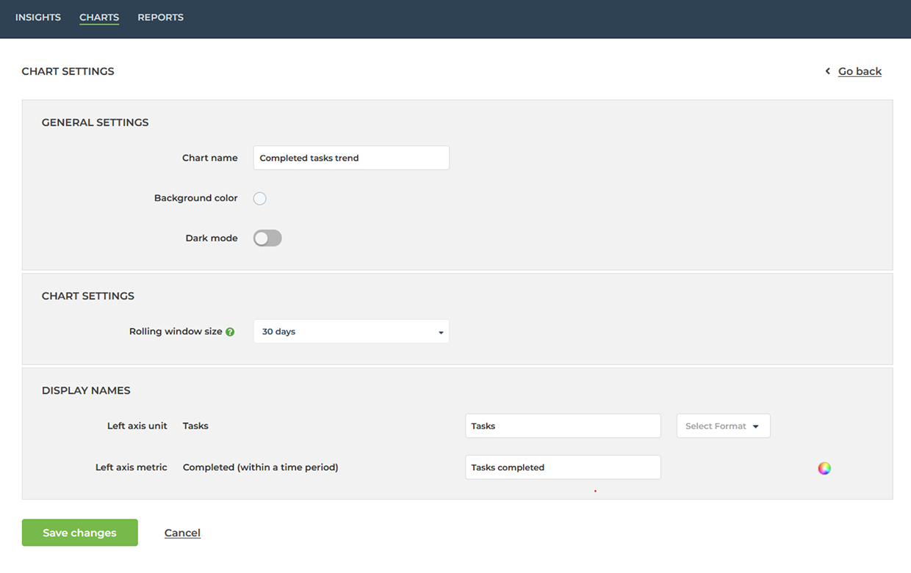
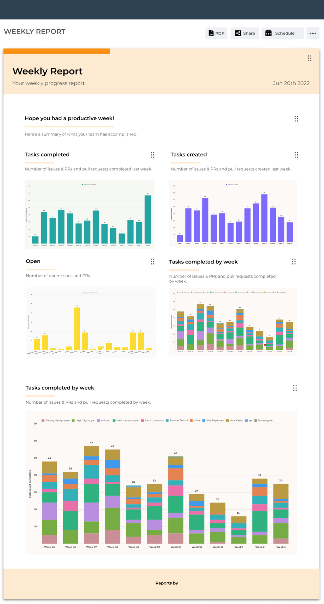
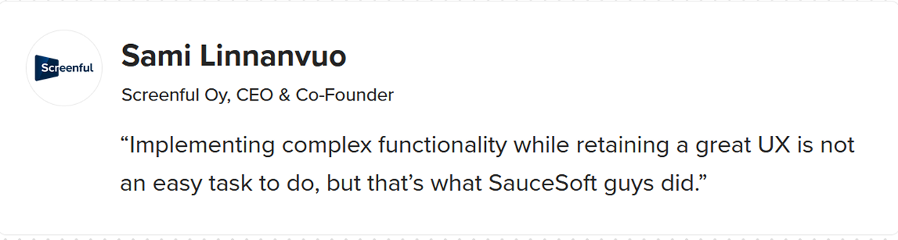

UX Design and Development
BI reporting tool redesign
Context
SauceSoft partnered with Screenful, a SaaS company providing business intelligence dashboards and progress reporting tools. Their product was powerful, meeting all functional requirements, but users found it difficult and frustrating to manage the reports.
Problem
During an initial demonstration and subsequent usability evaluation, we found that while on the effectiveness front, the product was great and the users could achieve their goals accurately, doing so required excessive effort. Managing report content involved navigating through a complex web of subpages, which caused high cognitive load as well as reduced overall efficiency and satisfaction.

Process
After presenting our findings to Screenful, we collaborated through design workshops to explore potential solutions. One key insight emerged: the need to eliminate unnecessary navigation. What if users could manage everything directly within the report itself?
I translated this concept into UI designs for a new inline editing mode, allowing users to modify reports without leaving the main view. Early feedback showed this approach to be far more intuitive and efficient.

Solution
Once the design direction was validated, we moved into implementation. I joined the development team as well, as there were only occasional changes to be made in the designs at this point. Working within the development team, I built the editing mode in Vue.js, bridging the gap between design and engineering. I actually learned Vue for this project specifically, which was simple enough from a React.js background.
We iterated continuously, refining both design and code based on client feedback in weekly meetings.
Impact
The new editing mode significantly reduced user effort and improved satisfaction, as reflected in the client’s feedback.
